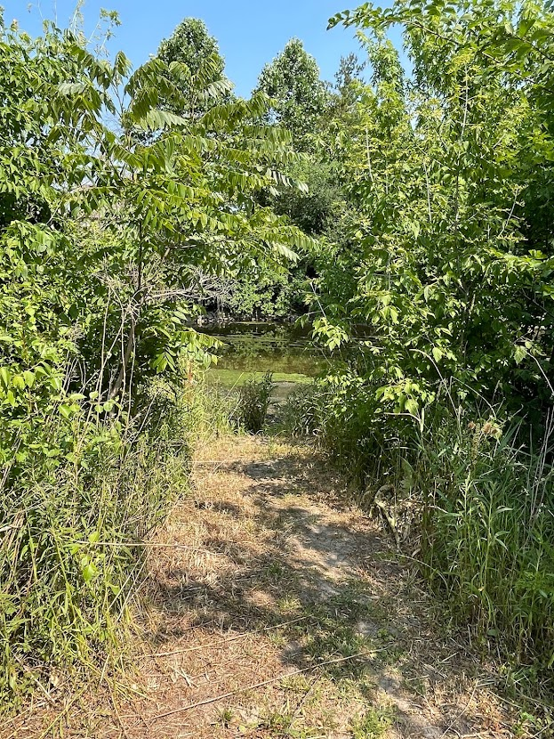
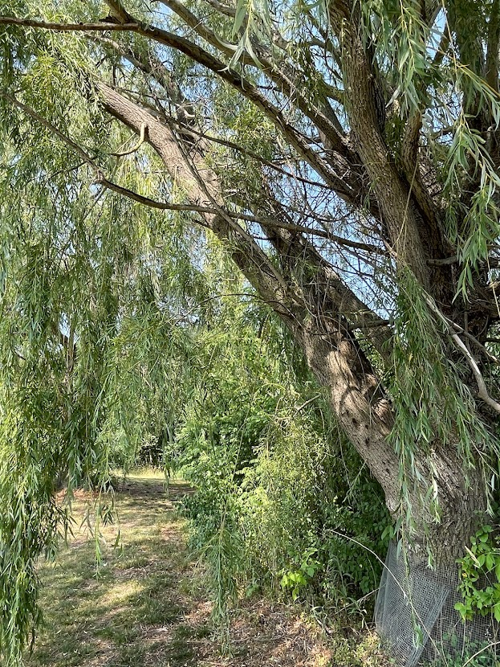
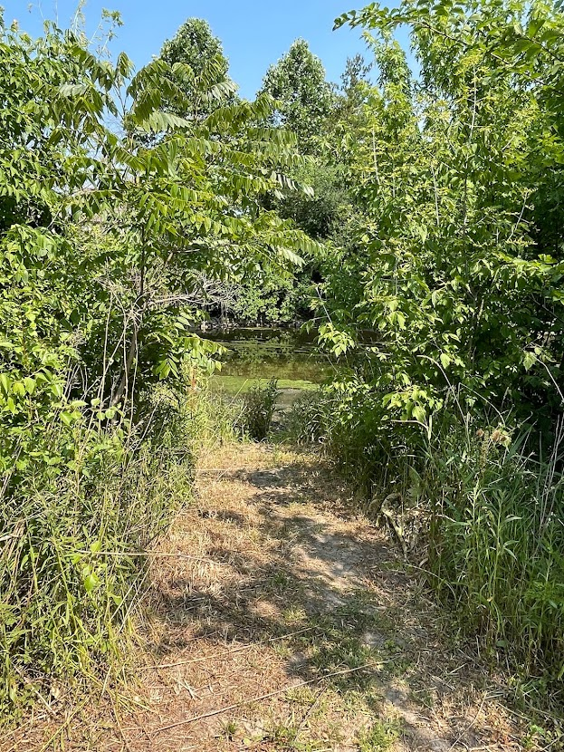
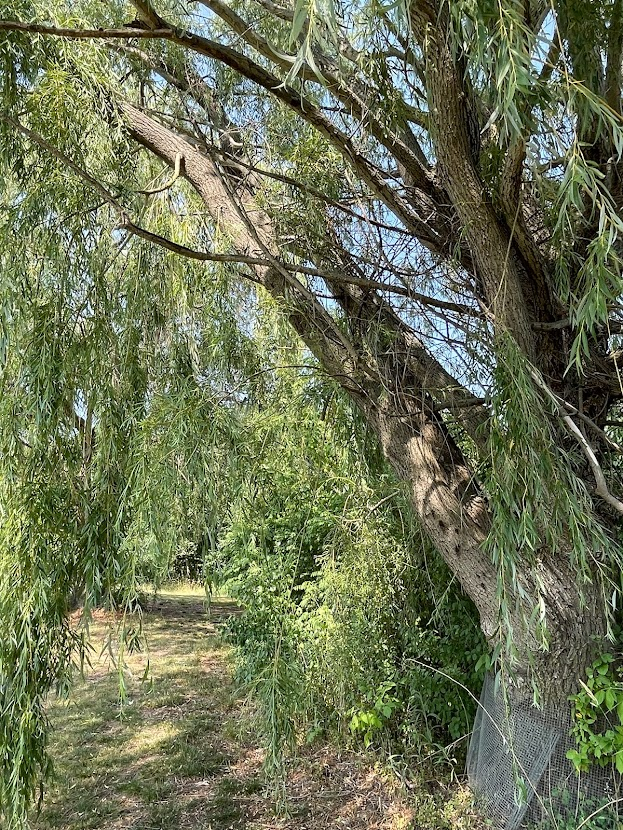

DuPage forest preserves contain more than 166 miles of trails, from seldom-traveled footpaths to wide limestone and asphalt trails. Most are open to hikers, joggers, horseback riders, cross-country skiers, snowshoers, and wildlife-watchers, but a handful may have seasonal or site-specific restrictions.
 


